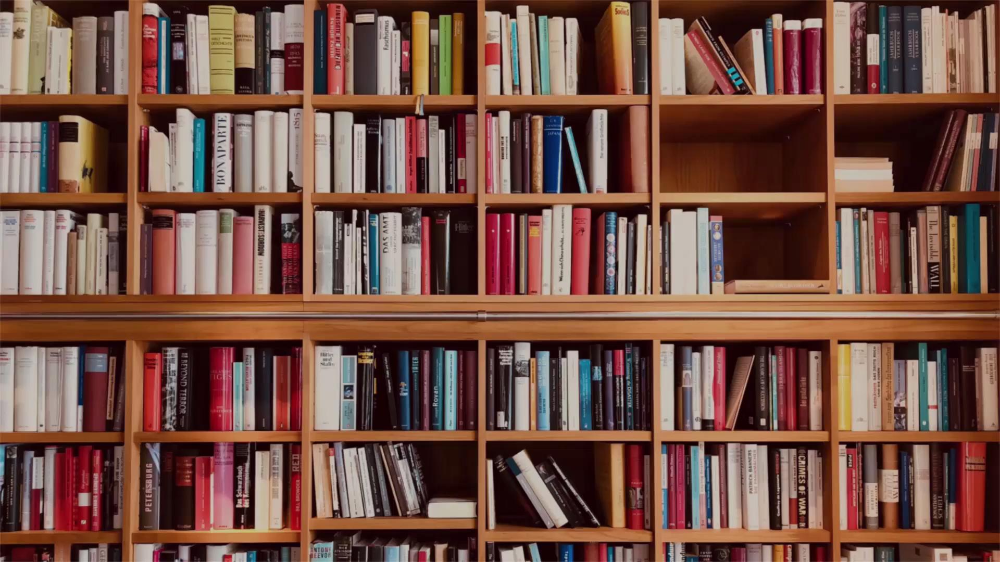

We provide state of the art facilities in our campus. We have ensured that the most modern lab facilities are available to our students.

Computer Education com-lab-1Computer Education initiates our young students into the captivating world of computing, and introduces them to its wide and ever increasing range of applications. We commence computer education from lower classes itself. We make sure that high end machines are available for each child.Our computer lab is spacious and occupies two rooms with the latest computers.
Library lib22Our library occupies a spacious room with a large collection of books on a wide variety of topics. Books on spirituality, foreign publications, Encyclopaedias, literary work in English and Telugu, etc. are available. In addition to this, we also have rare reference books that help to enhance the knowledge of the students. Our school promotes reading, and encourages students to cultivate a reading habit which in turn can help them to augment their knowledge and language skills.
Sports basket-ballPhysical fitness is the basis of dynamic and creative intellectual activity. Sports provide an excellent opportunity for our students to stay fit and develop team spirit and friendship among other things. The school has taken great care to ensure that all sports requirements are met and our children are benefited by the same. We have one room for sports related activities and have provision for indoor games such as carrom, chess and badminton. Ample facilities for outdoor games such as volleyball, handball, basketball and kho-kho are available, since we have the respective playgrounds.
Transportation transport Our school has a well developed transportation facility that is available to both students and staff. We have a fleet of 5 buses that connect the school with various selected locations across the town and its outskirts.
Other Facilities and Provisions Our school building has 1 room each for the Principal, staff, and office. We have 21 class rooms, 1 science lab, 1 math lab, 1 library, 1 computer lab, 1 examination room, 1 work experience room, 1 drawing room, 1 resting room, 1 sports room, 1 TV room, 1 teaching aid room, and 1 music room. Here, we teach computer as work experience. We have an e-learning lab with 27 computers. Ample facilities are available for conducting cultural and other programmes. In recent AISSE exams, we achieved 100% pass with full distinction. The school has 24-hour uninterrupted water supply and 3 phase power supply with backup provisions. The best, hygienic and separate sanitation facilities for girls and boys are available on each floor. Separate treated drinking water supply is available. First aid is available in the campus itself and higher medical facilities are available nearby. Our students are exposed to the ancient and vibrant culture of Bharat, which helps in inculcating moral and social values in them. In addition, to embed social and self-responsibility in young minds, we encourage and facilitate visits to orphanages, nature & literary activities, etc., and provide immediate relief work for victims of natural calamities. Counselling facilities are provided in the school for students who need it. The nearest bus station is the Jubilee bus station, 4 km away. The nearest railway station is the Secunderabad Railway Station, 3 km away. The nearest airport is the Shamshabad Airport, approximately 40 km from here.